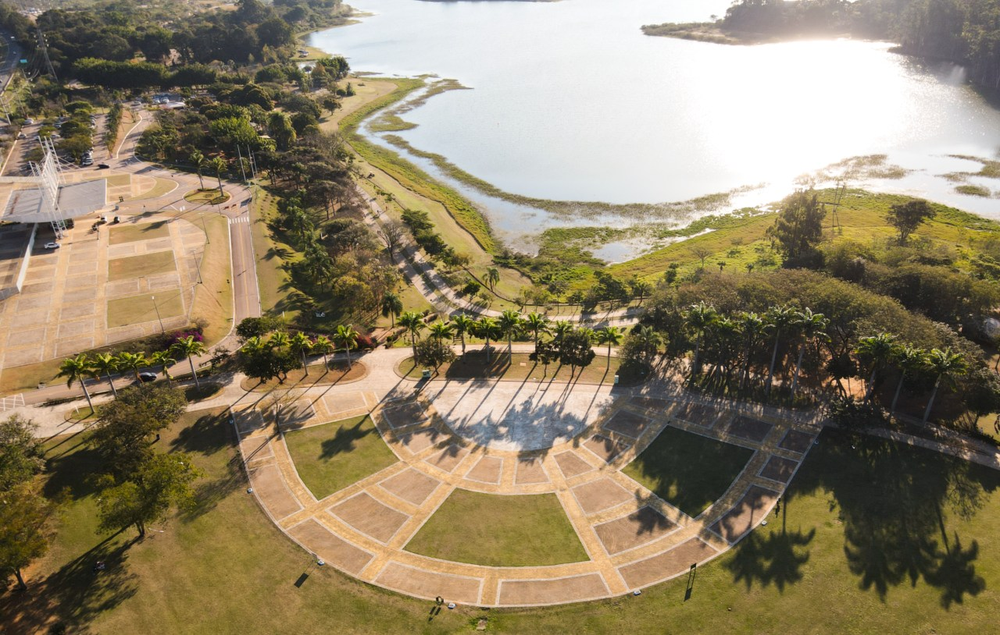
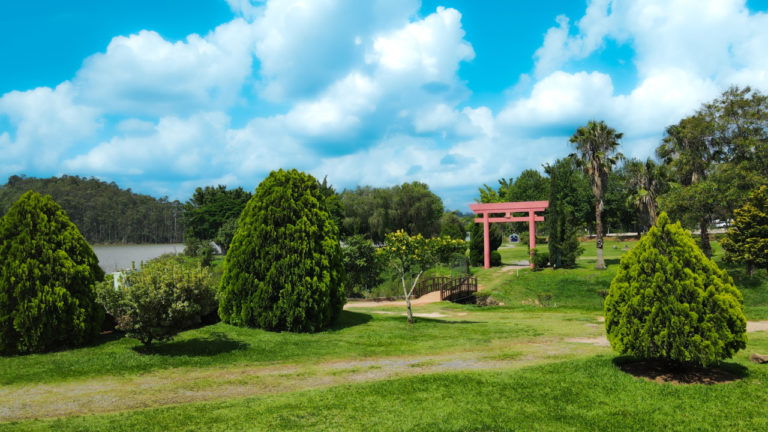
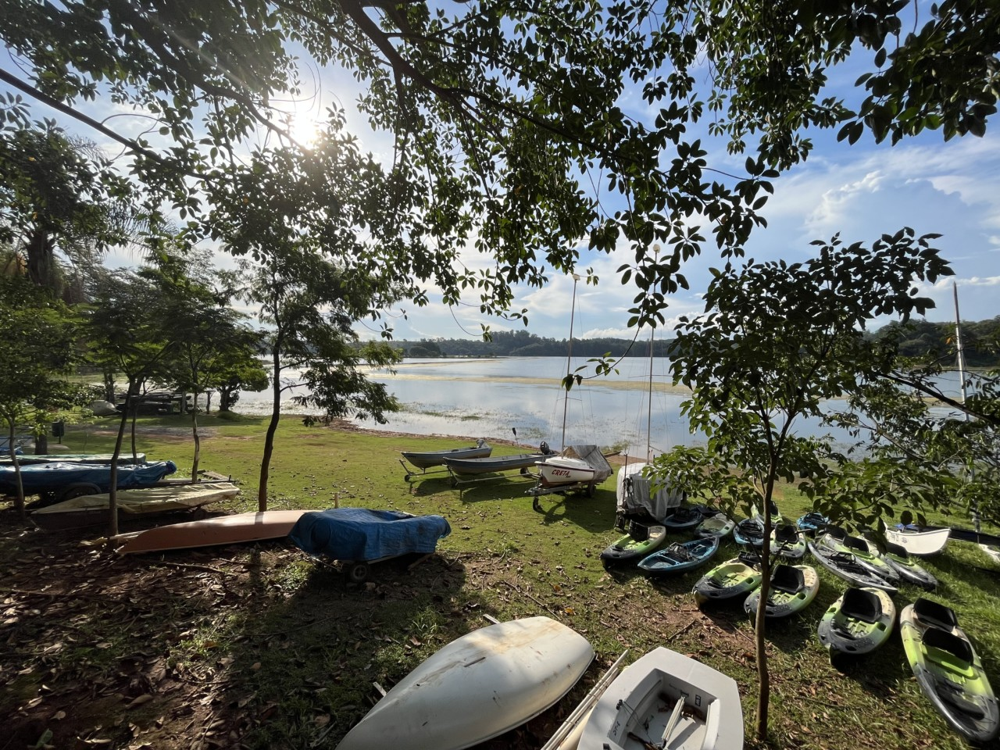
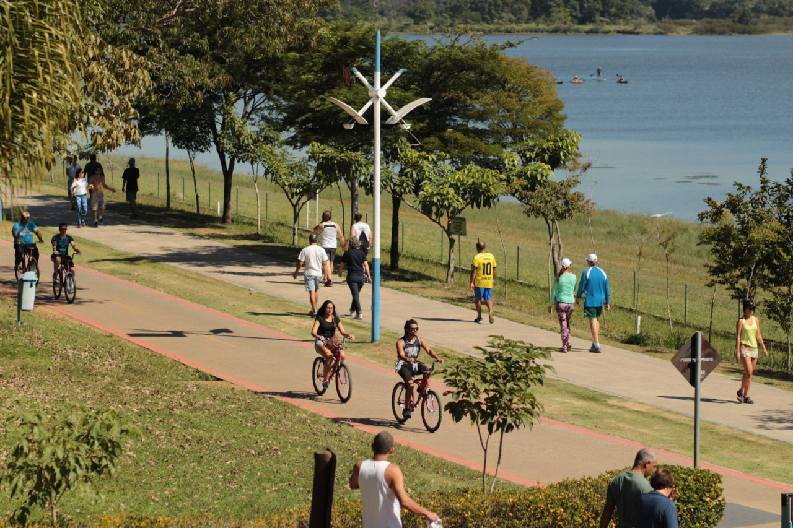
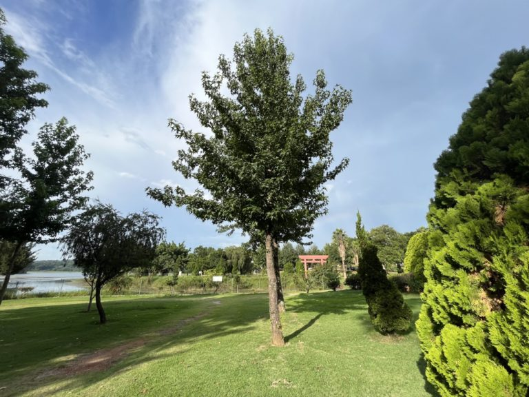
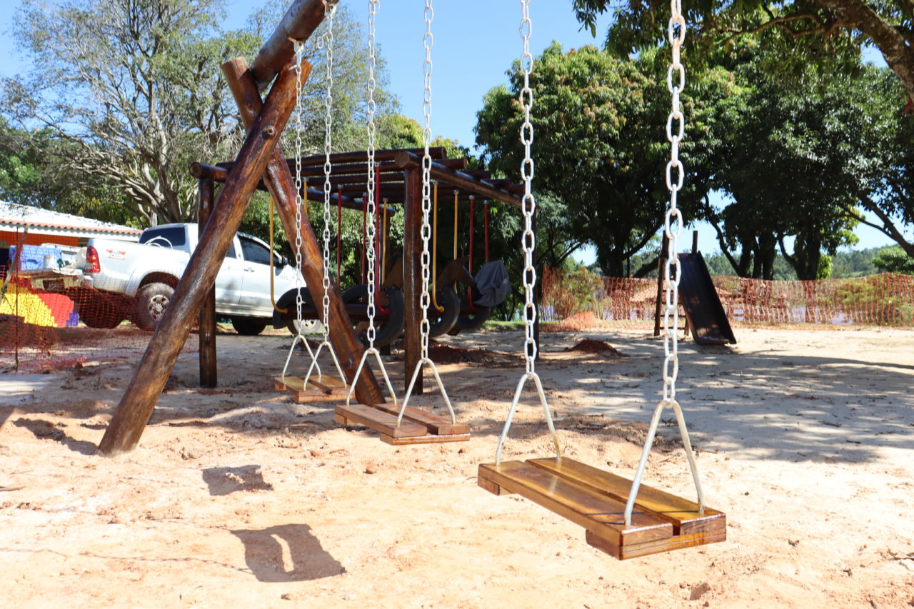
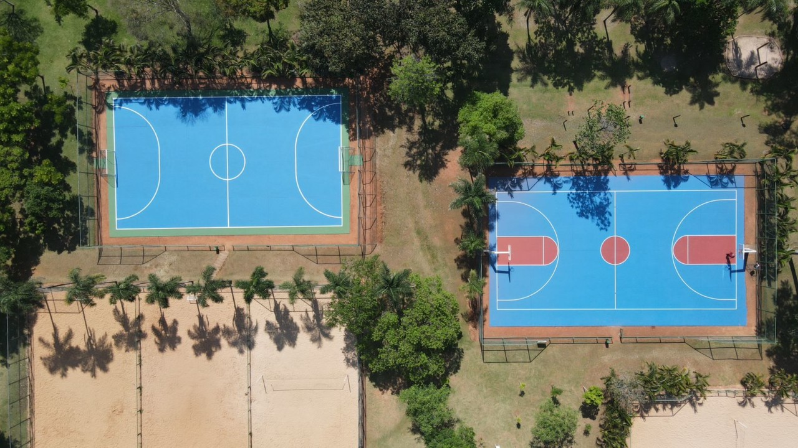
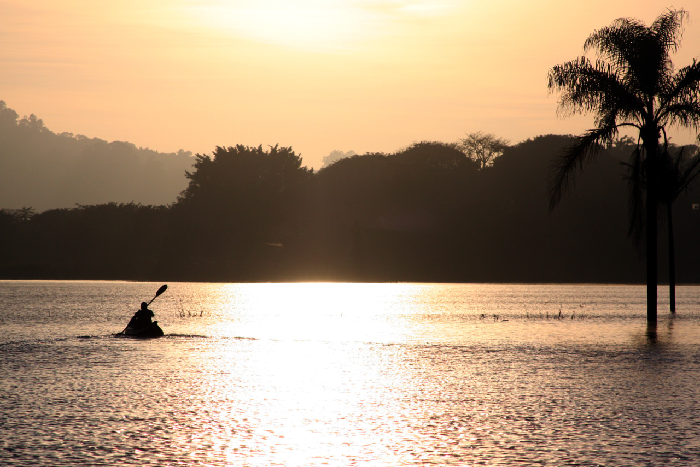

Pista de aeromodelismo
Pavimentada, com hangar coberto. É preciso estar cadastrado junto à Cobra e na administração do Parque (apresentando CPF, RG e BRA). Passa por manutenção toda segunda-feira.

Do silêncio do Jardim Japonês à adrenalina do Centro Náutico, descubra cada canto do parque.

Inspirado na estética zen, o jardim combina pedras, lanternas, carpas e pontes de madeira sobre um riacho artificial. É o espaço ideal para meditação, fotografia e momentos de calma longe do ritmo urbano.
Instalações à beira do lago com vestiários, instrutores credenciados e equipamentos de qualidade. O espaço oferece caiaque em um ambiente tranquilo, perfeito para famílias e iniciantes que querem vivenciar o lago com segurança.

Percurso integrado à paisagem do parque, com trechos compartilhados com pedestres. Respeite a sinalização e a velocidade indicada em cada trecho.
| Trecho | Distância |
|---|---|
| Do Jardim Botânico até linha férrea | 2.550 m |
| Da área de manancial (linha férrea) até o Parque da Cidade (Peama) | 1.750 m |
| Trecho completo — Jd. Botânico ao Parque da Cidade | 4.300 m |
| Circuito fechado dentro do Parque da Cidade | 2.760 m |

Rede de trilhas com diferentes níveis de dificuldade, desde caminhadas de 20 minutos até percursos de 1h30 entre araucárias e fauna urbana. Placas educativas ao longo do caminho.

Pavimentada, com hangar coberto. É preciso estar cadastrado junto à Cobra e na administração do Parque (apresentando CPF, RG e BRA). Passa por manutenção toda segunda-feira.
Circuito Off Road em solo natural e Circuito On Road pavimentado. Manutenção toda segunda-feira.
Três parques infantis (dois de madeira de reflorestamento perto da lanchonete e um misto equipado para PCD entre o Palquinho e a academia ao ar livre).

Cinco quadras oficiais (duas poliesportivas, duas de vôlei de areia e uma de futebol de areia). Acesso livre diariamente.


Acesse o Centro Náutico e experimente o caiaque com segurança, aproveitando o lago como ponto central da sua visita.